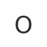
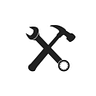

Demande
Ne laissez plus passer une demande.
Agent : Assistante client
Comment ça marche Réduire
Chaque email, formulaire ou message est centralisé et transformé en une fiche client prête à être traitée.
La demande client qui arrive

Devis, relances, factures, rendez-vous : vos agents IA s’en chargent. Vous validez d’un clic.


Talos se connecte à 24 outils que les artisans utilisent déjà : messagerie, agenda, logiciels de devis du bâtiment (Batigest, EBP, Obat, Tolteck), comptabilité, paiement et signature électronique.

Obat
TolteckAgents IA pour le BTP
Talos est une équipe d’agents IA pour les artisans et les entreprises du bâtiment. Cinq agents spécialisés préparent les devis, les factures, les relances d’impayés, les rendez-vous et le tri des mails, à partir de vos prix et de vos habitudes. Chaque document est validé par l’artisan avant envoi. Talos se connecte à 24 outils du métier, dont Batigest, EBP Bâtiment, Obat, Gmail et WhatsApp Business. L’offre démarre à 99 € par mois pour un agent, mise en place incluse, et plus de 30 artisans du bâtiment sont déjà accompagnés.
| Pour qui | Artisans et TPE du bâtiment, en France |
|---|---|
| Ce que font les agents | Devis, factures, relances, rendez-vous, tri des mails |
| Qui décide | Vous : rien ne part sans votre validation |
| Mise en route | 0 formation, mise en place incluse |
| Données | Hébergées en France, jamais utilisées pour entraîner un modèle public |
| Prix | À partir de 99 € par mois pour un agent |
« Nous ne croyons pas à une IA qui remplace les humains. Nous croyons à une IA qui leur rend du temps. »
L'équipe Talos
Chaque assistant Talos a un rôle précis : attirer et qualifier vos demandes, préparer vos devis, gérer vos factures, suivre votre trésorerie ou organiser vos emails… Choisissez ceux dont vous avez besoin.
 Assistante Client
Elle transforme vos demandes en opportunités.
Découvrir
Assistante Client
Elle transforme vos demandes en opportunités.
Découvrir
 Assistant Commercial
Il prépare et suit vos devis.
Découvrir
Assistant Commercial
Il prépare et suit vos devis.
Découvrir
 Assistant Facturation
Il gère vos factures dès qu’un devis est signé.
Découvrir
Assistant Facturation
Il gère vos factures dès qu’un devis est signé.
Découvrir
 Assistante Trésorerie
Elle vous aide à récupérer votre argent.
Découvrir
Assistante Trésorerie
Elle vous aide à récupérer votre argent.
Découvrir
 Assistante Administrative
Elle met de l’ordre dans votre boîte mail.
Découvrir
Assistante Administrative
Elle met de l’ordre dans votre boîte mail.
Découvrir
Commencez avec les assistants dont vous avez besoin.Ajoutez-en d’autres au fur et à mesure que votre entreprise grandit.
Bientôt : Assistant chef de chantier (plannings, comptes rendus) et Assistant gestion de stock (stocks, commandes).
Pendant que vous êtes sur le chantier, Talos prépare vos devis, relance vos clients, facture vos interventions et suit vos paiements.
Vous faites votre métier. Talos s'occupe du reste.
Ne laissez plus passer une demande.
Agent : Assistante client
Chaque email, formulaire ou message est centralisé et transformé en une fiche client prête à être traitée.
Vos devis en quelques minutes.
Agent : Assistant commercial
Une photo, une note vocale ou quelques informations suffisent à Talos pour préparer un devis prêt à être envoyé.

Plus de devis signés, moins d'oublis.
Agent : Assistant commercial
Talos relance automatiquement vos clients jusqu'à la signature.

Facturez sans effort.
Agent : Assistant facturation
Les factures sont préparées automatiquement dès que le chantier avance.

Gardez une vision claire de votre activité.
Agent : Assistante trésorerie
Suivez vos encaissements et laissez Talos relancer les impayés.

Votre planning s'organise tout seul.
Agent : Assistante client
Prise de rendez-vous, rappels et organisation de vos journées.

Le temps devient votre allié.
Vous rentrez à 19 h.
Vous faites encore des devis.
Vous rentrez.
Vos devis sont déjà prêts.
Le client attend trois jours.
Il rappelle un autre artisan.
Le client attend un quart d'heure.
Il signe avec vous.
Vous relancez vous-même.
Ou vous n'osez pas.
Talos relance à votre place.
L'argent rentre.
Vos chiffres, pas les nôtres. Cinq réponses, le montant apparaît. Le calcul est vérifiable ligne par ligne juste en dessous.
Reprenez chaque ligne : rien n'est caché derrière un algorithme.
Si Talos ne vous rapporte pas plus qu'il ne vous coûte…
Ce n'est probablement pas la bonne solution pour vous.
Si votre question n'est pas là, elle attend une réponse directe sur WhatsApp — pas un formulaire de contact.
Poser ma question sur WhatsApp Une vraie personne vous répond, sans formulaire.